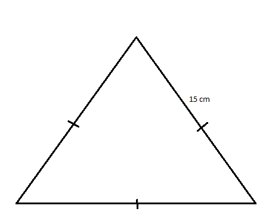

Triangle Classification
The basic elements of any triangle comprise its sides as well as its angles.
By considering their sides, triangles can be classified as follows:
- Equilateral: All three sides are equal. 
- Isosceles: Only two sides are equal.
- Scalene: All the three sides are different.
Example of an Equilateral triangle

Example of an Isosceles triangle

Example of a Scalene triangle
Triangle Tracker
Click the button to enter the three sides of the triangle.